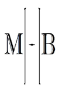

Introduction
During my time studying mathematics, there came a point where I truly understood the term "PROOF". We proof mathematical statemets as we define the language of mathematics to ourselves and to our peers. This creates an insight to a universal rule that proofs are factual because of conditions within our plane. Proofs are widely accepted by many until proven wrong, so why not create the proof of my personal knowledge. If my knowledge is proven wrong, I only grow from it.
Tools like GitHub have been around for sometime and understanding them has never been a challenge. But when you apply this knowledge to promote yourself? The challenge becomes "How do I present myself". You want to show all the flashy things and prove the indepth knowledge. You want to keep it simple, slick and sleek, but jam packed with years of trial and error. If your in the same boat as I, you also realize that you'll have to refactor code, off your workstation and onto your personal device to avoid potential contract conflicts.
In all, I want a way to present personal research and development in conjonction with a personalized toolbox of custom alogrithms, monitoring tools, or configuration files I may need in my careers lifetime. In turn, this will allow me to show Proof of work and Proof of knowledge.
I do hope you enjoy reading these potential solutions as I enjoyed making them.
